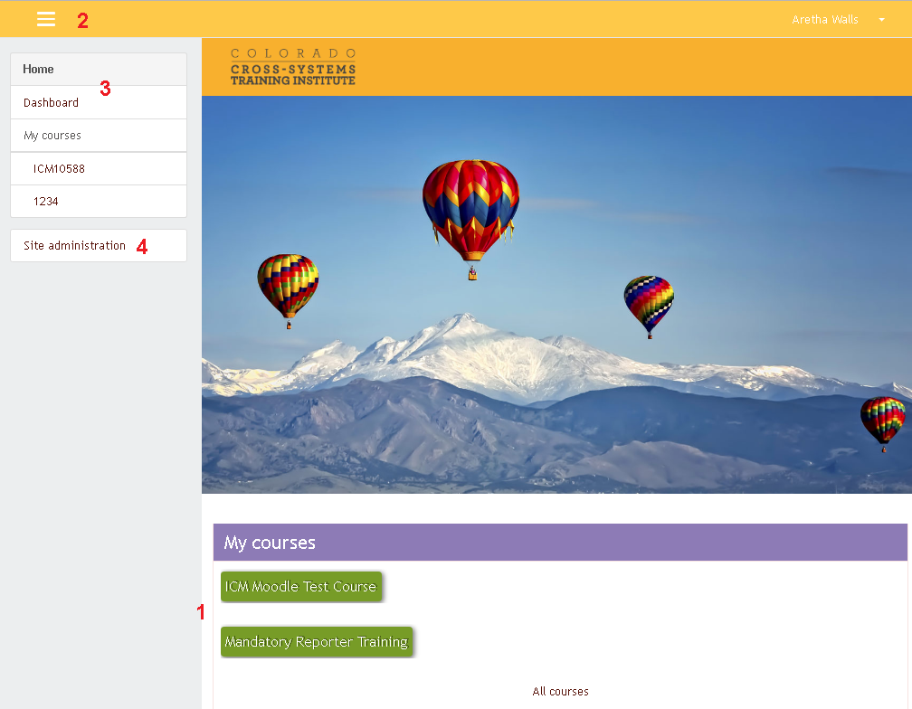
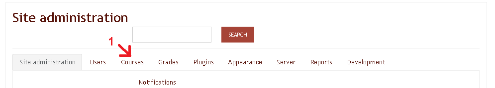
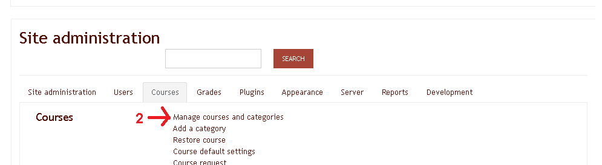
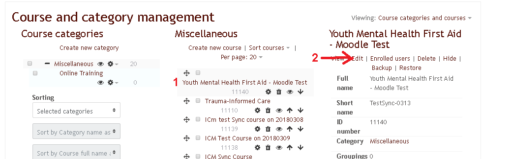

CSTI Administrative and Support Functions
Moodle
Moodle is a piece of software used on CSTI for cataloging and launching web-based trainings.
On the front page, you’ll see a list of your current web-based trainings (1). Click the green button to reach the class launch page. Clicking the three lines at the top left (2) will open your navigation menu. Home and Dashboard (3) will both give you an overview of your current courses in slightly different formats. Site administration (4) will grant access to administrative functions for those with the correct permissions.
The most common task for an administrator on Moodle is to post a new web-based training. You’ll start by clicking Courses (1) on the Site administration page.
Chose Manage courses and categories (2).
New courses will appear at the top of the broadest category- look for it by name. See Admin Console for more information on creating courses and syncing classes. Click on the class title (1), then click Edit (2).
On this page, you can edit the course’s display title. You’ll want to keep the short name the same as the class’s ID. Click SAVE AND DISPLAY when you’re satisfied.
To add a new SCORM package, click the small gear icon (1) at the top right of the course’s page, then chose Turn editing on (2). You can now drag and drop properly formatted SCORM packages into the course area.
For more detailed instructions on customizing Moodle, see Moodle's documentation page.